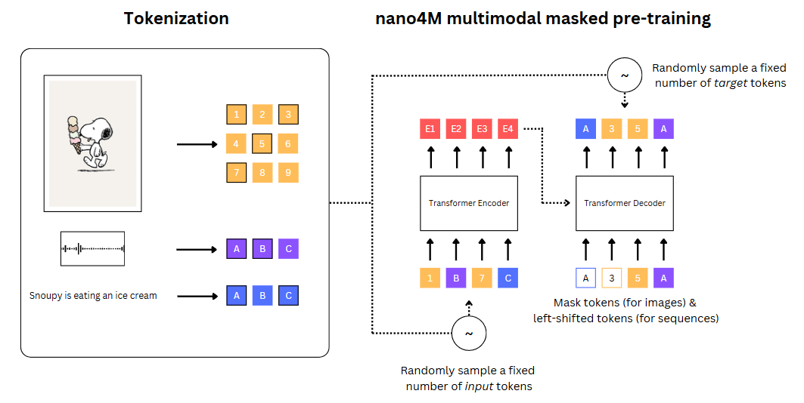

Introduction
...
Audio Tokenizer
As part of our effort to integrate audio into nano4M, we developed a tokenizer based on a Vector Quantized Variational Autoencoder (VQ-VAE). The goal was to obtain discrete audio representations that can be used for multimodal learning alongside text and images.
Model Architecture Overview
We experimented with three different audio tokenization architectures: (1) VQ-VAE using mel spectrogram input and Griffin-Lim decoding, (2) VQ-VAE trained directly on raw waveform, and (3) VQ-VAE combined with a WaveNet decoder.
Mel Spectrogram + Griffin-Lim
Raw Waveform + L1/STFT Loss
Raw Waveform + WaveNet
1. From Spectrograms to Tokens
We began by training a VQ-VAE on LibriSpeech (100h), using mel spectrograms as input features. While reconstruction losses appeared low, the resulting waveforms reconstructed using Griffin-Lim were highly distorted.
Audio Sample: Original vs Griffin-Lim Reconstruction
Original
Reconstructed (Griffin-Lim)
2. Raw Waveform Modeling
We applied L1 loss between original and reconstructed waveforms. Despite improvements, the L1 loss failed to align with perceived audio quality. Adding a Short-Time Fourier Transform (STFT) loss helped, but did not fully resolve the issue.
Audio Sample: Original vs VQ-VAE on raw waveform
Original
Reconstructed (VQ-VAE raw waveform)
Training Loss (Before and After Cosine Annealing)
3. WaveNet as Decoder
To achieve higher-quality reconstructions, we replaced the VQ-VAE decoder with a WaveNet conditioned on the quantized latents \(z_q(x)\). This autoregressive decoder models the waveform as a product of conditional distributions:
$$ p(x|h) = \prod_{t=1}^{T} p(x_t | x_{1:t-1}, h),\text{ where } h = z_q(x) $$The WaveNet predicts parameters of a mixture of logistic distributions per timestep:
$$ \begin{align} &p(x) =\sum_{i=1}^{K} \pi_i \cdot \text{Logistic}(x|\mu_i, \sigma_i) \\ &Loss_{t} = -\log(p(x_{t}))\\ &Loss_{total} = \sum_{t=1}^{T}Loss_{t} \end{align} $$WaveNet Loss Visualization
The video below shows how each waveform point is modeled using a mixture of logistic distributions, and how the training loss is computed.
4. Stabilizing Training
Initial training on the 100h subset was unstable. We added:
- Cosine Annealing with warm restarts
- Gradient Clipping
These changes partially stabilized learning. However, audio quality remained limited—likely due to insufficient latent expressiveness.
Audio Sample: Original vs reconstruction with Wavenet
Original
Reconstructed (VQ-VAE raw waveform)
Training Loss of Wavenet
Tokenizer training
This animation shows the entire audio transformation flow: from raw waveform input to discrete latent representation and back through WaveNet reconstruction.
7. Summary
Our experiments showed that high-quality waveform reconstruction from discrete tokens is challenging. L1 and STFT losses are insufficient alone; autoregressive models like WaveNet help, but depend heavily on latent quality and training stability.
Future work includes exploring HiFi-GAN or WaveRNN as decoders, and adding perceptual losses for better alignment with human judgments.
Dataset
A key challenge in our work was to find a suitable multimodal dataset containing aligned audio, images and text captions. Surprisingly, we did not find any publicly available dataset containing all three modalities. We ended up settling on AudioCaps dataset, containing, audio samples sourced from YouTube videos along with Human-writted captions describing the audio.
While AudioCaps provides audio-caption pairs, it lacks corresponding aligned images. We considered extracting frames from the source YouTube videos, but this would violate YouTube's Terms of Service and risk account termination. Instead, we generated synthetic images using a Dsitilled Stable Diffusion inference conditioned on the text captions.
Aligned audio, image and caption examples

Caption: "..."

Caption: "..."

Caption: "..."
Dataset Creation Pipeline
- Downloading the audio from and caption from AudioCaps
- Generating images using Distilled Stable Diffusion
- Tokenizing the images using Cosmos-Tokenizer
- Tokenzing the audio using ...
Limitations
While our approach provided a solution to the lack of available dataset, it has some limitations. Synthetic images does not perfectly match the audio content and are sometimes unrecognizable. Furthermore, AudioCaps dataset contains mostly environmental sounds which due to their uniqueness may be hard to learn and generate for a simple model.
Nano4M & Extras
We used the AudioCaps dataset mentioned above to train our multimodal model, nano4M. To do this, we applied three different tokenization strategies:
- GPT-2 for the text captions,
- Cosmos for RGB images (patch-based tokenization),
- and our own VQ-VAE-based tokenizer for the audio.
Once the dataset was fully tokenized, we trained our model using the nano4M architecture, which is based on a masked Transformer. During training, we intentionally hide a subset of the input tokens across modalities and ask the model to predict them using the available context.
The diagram below illustrates this process. On the left, each input modality—image, audio, and text—is tokenized separately. Then, a fixed number of tokens are randomly selected as inputs to the Transformer encoder, while the remaining ones are treated as targets to be predicted by the decoder. This masked pre-training encourages the model to reason across modalities.

This training strategy—visualized above—forces the model to reason across modalities to recover missing pieces. Whether it’s a missing sound, word, or image patch, the model must infer it using cues from the other modalities.
By repeating this process many times, the model learns to connect and understand how text, images, and audio relate to each other. This helps it build a shared representation of all three, and allows it to do things like generate sound from text, or use audio to help interpret an image.
As a result, we obtained a lightweight but versatile model that can perform basic reasoning across modalities. Our early experiments show promising results, especially in tasks like text-to-audio generation and cross-modal completion.
Below are some of the results we obtained during our evaluation:
Conclusion & Limitations
...